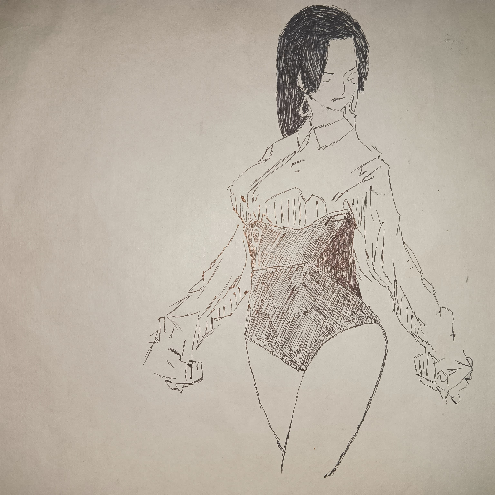
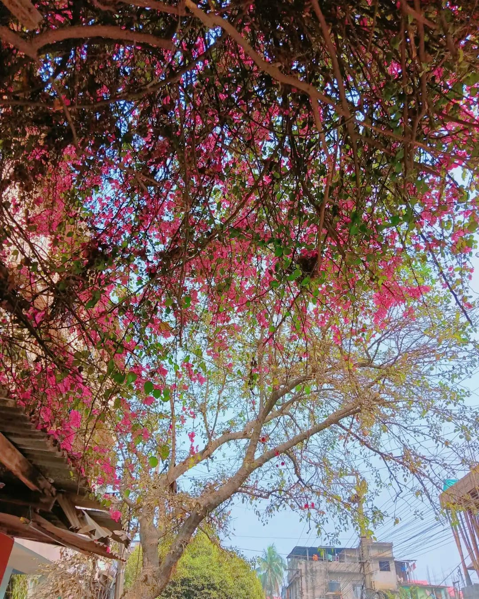
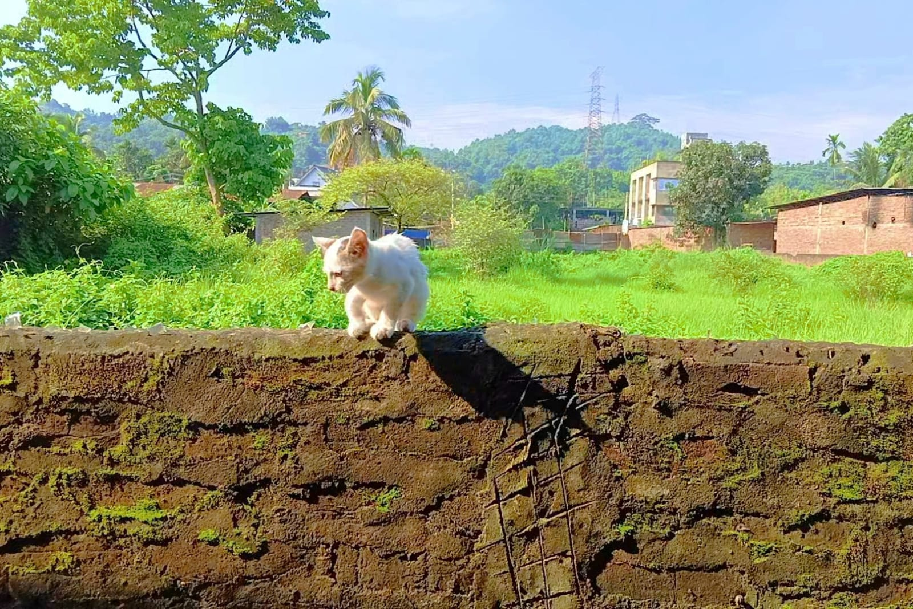

Ashish Singh
Photographer and Web developer.
Download ResumeMy Portfolio



About
Embark on a visual odyssey through my portfolio, where photography transcends mere imagery to become an artistic narrative of life's myriad shades. Each frame is a testament to my passion for capturing fleeting moments, where light and shadow dance in harmony. From the majestic sweep of landscapes to the intimate gaze of portraits, every click is a story waiting to be unveiled. Witness the beauty of the ordinary elevated to the extraordinary, where emotion and expression intertwine in a symphony of pixels. Join me on this journey where every image is a brushstroke, painting a canvas of memories and emotions.
My Skills
Photography
95%
Web Design
85%
Sketching
80%
55+
Projects Done
Projects Done
Contact Me
Guwahati, Assam
Email: sonuraj1649@gmail.com